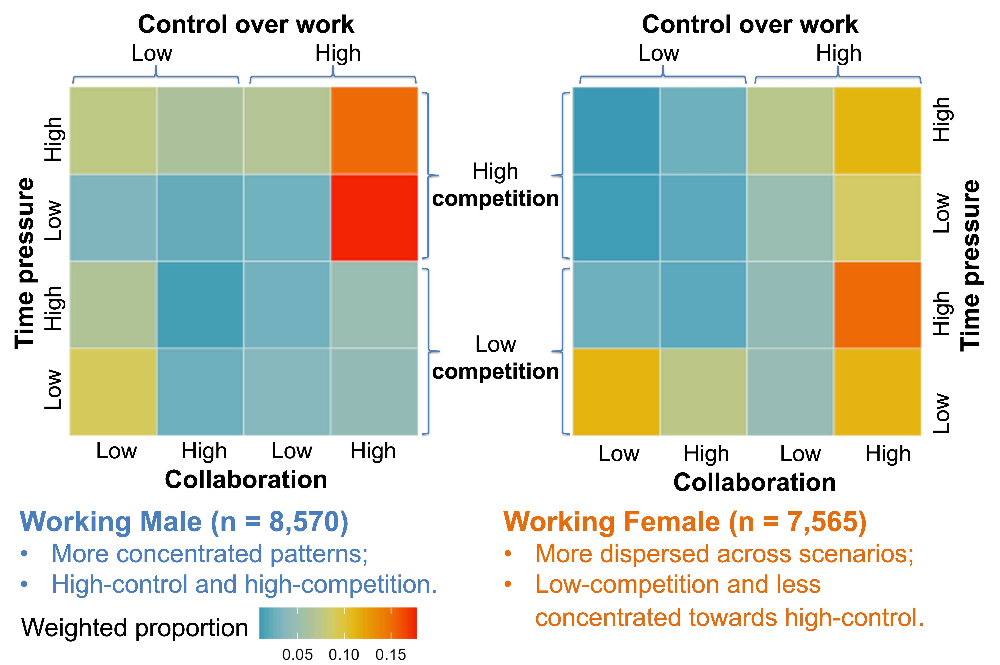
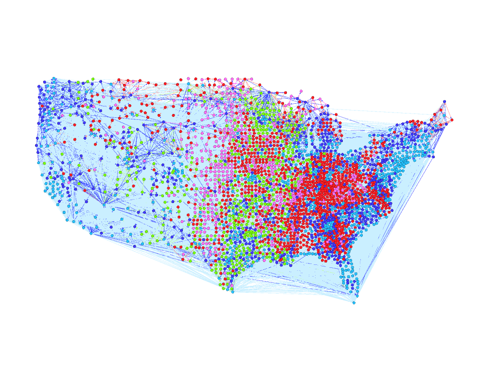

Ph.D. Candidate in Sociology,
Johns Hopkins University
Areas of Specialization:
Social inequality, work and family, population health
Quantitative and computational methods
I am a sociologist and social demographer, and a student affiliate at the Hopkins Population Center. My research focuses on social inequality, work and family, and population health, with a strong foundation in quantitative and computational methods.
My dissertation centers on socially structured activity-time allocation in daily life, exploring how work, family, and personal domains interact to reproduce gender and class inequality. I conceptualized individuals' daily life as a system of the three domains, with interpersonal interdependence within family. Methodologically, I integrate machine learning with classical statistical methods to overcome empirical limitations and expand the analytic potential of nationally representative datasets, including the American Time Use Survey, the Current Population Survey, and the O*NET occupational database. My work seeks to understand how structural inequality in the labor market and family manifest in individuals’ everyday decisions and behaviors, and shows how equitable social environments may support more sustainable and inclusive social outcomes for the whole population.
In additional to my independent research, I have also collaborated on interdisciplinary research projects on social disparities in population health and preventive care, college students' use of generative AI in learning, and population and places in response to environmental hazards. These projects complement my dissertation research and reflect my broader research interests in how structural forces shape individual behaviors and population-level outcomes. My roles in these research projects include data collection, database management, data cleaning, statistical modeling, and visualization across diverse data types. I have worked with a wide range of data, including survey data, national and county-level population and geospatial data, and structured and unstructured textual data. I developed strong technical skills, workflow management, interdisciplinary collaboration, and the production of timely, high-quality research outputs along the process.
My prior teaching experience mainly focused on research methods in social science, introduction to social statistics, and computational social science. I am happy to extend my teaching to substantive topics in social inequality and social demography, including work and family, gender, and population health.
Gendered occupational work contexts
Community detection by out-migration flows, geographic distribution
